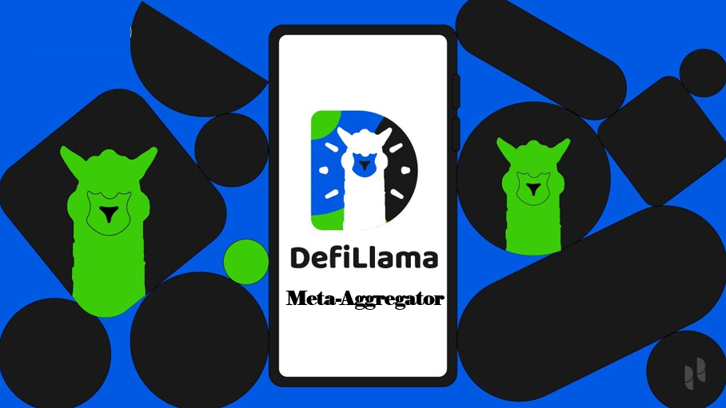

## The Rise of DefiLlama: From Spreadsheet to Savior (Almost)
Remember that feeling? The early days of DeFi, when navigating the space felt like spelunking through a digital cave system armed with nothing but a flickering candle and a prayer? Okay, maybe that's a slightly dramatic exaggeration, but the lack of clear, consolidated data was definitely a thing. You'd bounce between ten different websites, squinting at charts, frantically cross-referencing numbers, praying you weren't accidentally sending your hard-earned ETH to some rug pull disguised as a yield farm. Sound familiar?
Then DefiLlama showed up, seemingly out of nowhere, like a digital Sherpa guiding lost souls through the treacherous mountains of decentralized finance. And it did it with a surprising lack of fanfare. No massive marketing blitz, no celebrity endorsements (as far as I know… maybe Vitalik secretly uses it?). Just… data. Clean, well-presented, readily accessible data. Seriously, it’s a marvel.
It's easy to take DefiLlama for granted now. It’s become the ubiquitous source of DeFi analytics, almost synonymous with the word "DeFi" itself for many. But think about it: how did a single platform achieve such dominance in a space known for its… let’s call it dynamic nature? Was it magic? Some secret algorithm only known to a select few coding wizards? Or was it something… simpler?
I think it was a combination of factors, and I’m going to hazard a guess here. Firstly, there's the sheer utility of it all. They aggregated data from various chains and protocols, effectively creating a one-stop shop for anyone interested in understanding the DeFi landscape. Before DefiLlama, trying to grasp the total value locked (TVL) across different platforms felt like trying to solve a particularly thorny Sudoku puzzle while blindfolded. Now? It's just… there. Clear as day. Amazing.
Secondly, the user interface is incredibly intuitive. No complex graphs or cryptic jargon. Just simple, easily digestible information presented in a way that even your grandma could (theoretically) understand. Okay, maybe not grandma, but you get the point. Accessibility matters. Big time.
But beyond the technical aspects, DefiLlama achieved something more profound. It fostered a sense of community. It became a central hub for discussion and analysis. It wasn't just providing data; it was facilitating conversations around that data – the good, the bad, and the downright ugly. This community aspect, this feeling of shared knowledge, I think is crucial to its success. It's like the online equivalent of that friendly neighborhood watering hole, only instead of swapping stories about the weather, we're dissecting the latest DeFi trends.
Now, I'm not saying DefiLlama is perfect. There are always improvements to be made, new data points to incorporate, and challenges to overcome. And frankly, I still sometimes get a little lost in its more intricate sections. But it’s a testament to the power of simple, well-executed solutions in a world that often prefers flashy, overcomplicated ones.
So, what did I learn writing this? Well, that my initial, somewhat dramatic, analogy of early DeFi was maybe a little too much. Also, that DefiLlama's success isn't just about technical prowess; it’s about building a community, providing a clear and simple user experience, and answering a clear, crucial need. And maybe, just maybe, it's a good reminder that sometimes, the simplest solutions are the most powerful. Who knew a spreadsheet could become so influential? Turns out, quite a lot of people. And I, for one, am incredibly grateful.

## From Spreadsheet to Unicorn: The Surprisingly Messy Birth of DefiLlama
Remember that time you tried to build a Lego castle only to realize you were missing half the pieces and the instructions were written in Klingon? That, in essence, is how building DefiLlama felt in its early days. Okay, maybe not exactly Klingon, but close. The sheer chaos and unexpected turns? Totally accurate.
It all started, as many brilliant (or at least mildly successful) ideas do, with frustration. I – let's call me "the reluctant founder," because the "visionary" label feels a bit grandiose – was deeply frustrated by the lack of a single, reliable place to track the ever-expanding DeFi landscape. It was like trying to navigate a jungle with a map drawn by a drunken cartographer. Scattered websites, opaque documentation, inconsistent data – it was a nightmare. And I, being someone who values my sanity (mostly), decided something had to be done.
Initially, it was just a spreadsheet. A ridiculously long, unwieldy spreadsheet, constantly updated with painstakingly gathered data from various protocols. Think Excel, but with more existential dread. My friends, bless their hearts, tried to be supportive, but their eyes glazed over whenever I started talking about TVL (Total Value Locked). "It's like market cap, but for… decentralized finance," I'd explain, before realizing I was losing them at "decentralized."
The transition from spreadsheet to something resembling a functional website was… eventful. We (and by "we," I mostly mean me and a rapidly dwindling supply of caffeine) learned a lot about web development, database management, and the subtle art of cursing politely in front of your computer. There were moments of sheer panic – late nights troubleshooting code, battling unexpected bugs, and praying the server wouldn't spontaneously combust. The early days were less about elegant design and more about making something work. Function over form, if you will. Or, as my then-partner liked to say, "form follows function... eventually."
But amidst the chaos, there was a spark. A quiet satisfaction in seeing the data gradually coalesce, forming a clearer picture of the DeFi world. The community started using DefiLlama, initially as a quirky little tool, then as a reliable resource. It was incredibly humbling. I remember the first time someone tweeted about DefiLlama, not as a complaint, but as a genuine recommendation. That was a huge win. A tiny, caffeine-fueled victory, but a win nonetheless.
There were setbacks, of course. Data inaccuracies, design flaws, and the occasional server outage threatened to derail everything. It felt a bit like herding cats, only the cats were algorithms and the goalpost was constantly shifting. But through it all, the community’s support kept us going. Their feedback, suggestions, and – let's be honest – their occasional harsh criticisms shaped DefiLlama into what it is today.
Looking back, it feels like a blurry, caffeine-induced dream. A testament to the power of frustration, sheer determination, and a healthy dose of luck. This isn't some perfectly crafted narrative of overnight success; it’s a messy, human story of building something from scratch – and the unexpected joy of seeing it take flight. And you know what? That's way more satisfying than any perfectly polished origin story could ever be.
## DefiLlama: More Than Just a Pretty Dashboard – It's My DeFi Sherpa
Okay, so I’ll admit it. I’m a bit of a DeFi noob. I’m not entirely clueless, I understand the basic concepts, but navigating the wild, wild west of decentralized finance felt, at times, like trying to assemble IKEA furniture blindfolded while juggling chainsaws. That’s where DefiLlama stepped in – or rather, its incredibly clean and intuitive dashboard did.
At first glance, it seems like just another aggregator site. Lots of numbers, charts, and protocols. But the more I dug in, the more I realized DefiLlama offers something… more. It’s not just about the data; it’s about how the data is presented, how it’s contextualized, and the sheer breadth of information it provides. Think of it less as a competitor to other aggregators and more as a highly organized, expertly curated guide to the DeFi jungle.
So, what sets it apart? Well, for starters, the sheer usability. I’ve tried other platforms, and let’s just say some feel like they were designed by someone who actively dislikes users. DefiLlama, however, is refreshingly straightforward. The information is clear, concise, and easily digestible, even for someone like me, who occasionally needs a nap just thinking about smart contracts.
Then there’s the scope. Other aggregators might focus on a few specific chains or protocols. DefiLlama, on the other hand, seems to be pulling data from practically everywhere. It’s a genuinely impressive feat of engineering and data aggregation, making it a one-stop shop for anyone wanting a comprehensive overview of the DeFi landscape. It’s almost overwhelming at times, in a good way – like opening a ridiculously well-stocked candy store.
But it’s not just about quantity; it’s about quality too. The data is updated regularly – a crucial point in the ever-evolving world of DeFi – and, importantly, it feels verifiable. I haven't deep-dived into their methodology (yet!), but the information feels robust and trustworthy enough to build initial assessments upon.
Now, I’m not saying it's perfect. There are moments where I wish for even more granularity – perhaps a deeper dive into specific protocol mechanics. And sometimes, the sheer amount of data can be a bit overwhelming. But these are minor quibbles in an otherwise excellent product.
One thing I genuinely appreciate is DefiLlama's focus on transparency. Unlike some sites that seem shrouded in mystery, DefiLlama encourages community contributions and engagement. This sense of openness really sets it apart and contributes to the feeling of being part of a collective exploration, rather than just a passive observer.
Writing this article has been a journey, really. It started as a simple plan to highlight DefiLlama’s features, but ended up being a reflection on my own DeFi journey. And that journey, thankfully, has been made significantly smoother and more enjoyable thanks to the clarity and comprehensive nature of DefiLlama. It's not just a tool; it’s a valuable resource that has demystified a complex space, making it more accessible and, dare I say, even… fun. Now, if you'll excuse me, I have a few more charts to explore. The DeFi candy store awaits!
## The Accidental King of DeFi Data: How DefiLlama Conquered the Crypto Wild West
Remember those chaotic early days of the internet? Dial-up screeching, Napster downloads, and a general sense that anything could (and probably would) break at any moment? That’s kind of how I felt diving into DeFi a couple of years ago – thrilling, terrifying, and utterly opaque. Navigating the sprawling landscape of protocols, yields, and risks felt like trying to assemble IKEA furniture blindfolded. Then I discovered DefiLlama.
It wasn't a flashy launch, no billion-dollar marketing campaign. It just... was. A simple, clean website aggregating data across the entire DeFi ecosystem. At first, I just used it to compare APRs, something that felt like trying to decipher ancient Sumerian tablets before. But gradually, I realized DefiLlama was doing something far more profound: it was building trust.
Think about it: the DeFi space is built on trust, but it's a trust built on… well, often nothing much. Smart contracts are mysterious boxes of code, and the actual operational integrity of a protocol is often left to… faith? This lack of transparency is a huge barrier to entry for many. DefiLlama, quite unintentionally perhaps, became the Rosetta Stone of this cryptic world.
Its success, I think, lies in its simplicity. No fancy charts, no unnecessary jargon. Just clear, concise data presented in an easily digestible format. It's the anti-Wall Street of data aggregation – less slick presentation and more, "Hey, here’s the information, use it wisely." And this unassuming approach, I argue, is what won the community over.
Of course, it's not perfect. There have been controversies around data accuracy (something inherent in the rapidly evolving nature of DeFi), and some even grumbled about its design. But these criticisms, ironically, only strengthened its position. It showed DefiLlama wasn't some untouchable entity, but a project striving to improve, just like the protocols it tracks. It felt human, approachable, even fallible – and that's incredibly rare in this sometimes hyper-serious space.
It’s also worth considering the timing. DefiLlama’s rise coincided with a massive surge in DeFi’s popularity. Was it simply riding the wave? Probably. But its ability to provide crucial, easily understandable information at a crucial moment was undeniably pivotal. It became the go-to resource, the common language that different DeFi communities needed to navigate the increasingly complex space. It was like suddenly having a map in a vast, unexplored jungle.
Writing this, I find myself almost surprised by DefiLlama’s success. It's a testament to the power of practical utility over elaborate marketing. It's a reminder that sometimes, the simplest solution is the most effective. And in a world obsessed with flashy promises and grandiose visions, DefiLlama's understated elegance is a breath of fresh air – or, perhaps more fittingly, a steady, reliable signal in the often noisy world of decentralized finance.
So, what have we learned? That even in a chaotic, rapidly evolving space like DeFi, a commitment to clarity, accessibility, and (dare I say it?) a bit of humble imperfection can lead to unexpected and remarkable success. And that, my friends, is a story worth telling.
## DefiLlama: Peering Into the Crypto Abyss (and Finding Some Light)
Remember that time I tried to bake a sourdough starter? It was a disaster. Complete and utter, floury failure. The whole process felt opaque, mysterious, a kind of culinary black box. I had no idea what was happening inside that jar, whether my little microbial friends were thriving or slowly dying a lonely, yeasty death. That’s how I used to feel about DeFi. A confusing, opaque, and frankly, slightly terrifying world.
Then I discovered DefiLlama.
And suddenly, things became…well, not easy, but significantly less terrifying. DefiLlama, for the uninitiated, is essentially a comprehensive dashboard providing real-time data on the Decentralized Finance space. Think of it as the sourdough starter’s meticulously detailed recipe card, only instead of flour and water, we’re talking about billions of dollars sloshing around in various protocols. It’s a window into the often-murky world of DeFi, showing us TVL (Total Value Locked), APYs, and a host of other metrics that, before, were often hidden behind confusing whitepapers and even more confusing code.
Now, I'm not a DeFi expert by any stretch. In fact, I still get a little queasy thinking about impermanent loss. But even I can appreciate the value of transparency in this space. And DefiLlama, in its own understated way, is a champion of that transparency. It's democratized access to information that was once the exclusive domain of hardcore crypto nerds and dedicated researchers. Anyone with an internet connection can now see how much money is locked in a given protocol, which protocols are performing well, and which are… well, let’s just say less well.
But is it perfect? Of course not. It’s a website, not a crystal ball. There are inherent limitations to the data it can provide. Some protocols might not be fully integrated, some data points might be slightly delayed. It’s a snapshot, not a full-length movie. And let’s be honest, sometimes the sheer volume of information can feel overwhelming. It's like being handed a library card to the greatest library in the world, but then realizing you don't know how to read.
Yet, despite its imperfections, DefiLlama is undeniably making a difference. It's fostering a level of accountability within the DeFi ecosystem. By shining a light on the inner workings of various protocols, it encourages developers to build more transparent and trustworthy platforms. It empowers users to make informed decisions, rather than blindly trusting promises and marketing hype. It's like having that sourdough starter recipe card – you can still mess up, but at least you have a fighting chance.
So, where does this leave us? Back to my sourdough starter analogy, perhaps. My first attempt was a failure, but I learned from it. I researched, I experimented, I consulted online resources (the digital equivalent of my DefiLlama journey!). Now, I can confidently say I've got a thriving sourdough starter. It wasn't easy, and it wasn't perfect, but with the right tools and information, I achieved something I thought was impossible. And DefiLlama, in its own way, is offering us the same: the tools and information needed to navigate the sometimes-chaotic, often-confusing, but ultimately fascinating world of Decentralized Finance. And for that, we should all be grateful. The road to DeFi mastery isn't paved in gold, but at least we can see where we're going. Now, if you'll excuse me, I have some sourdough bread to bake.
## DefiLlama's Wild Ride: Watching the DeFi Herd Grow (and Sometimes Shrink)
Remember that scene in "The Social Network" where Mark Zuckerberg's friend nervously asks, "Is this... is this a thing?" That's how I felt, watching DefiLlama's early days. This wasn't some slick, VC-funded platform; it was a raw, data-driven glimpse into the chaotic, exciting, and sometimes terrifying world of decentralized finance. And tracking its user adoption? It's been like watching a herd of wild mustangs – exhilarating, unpredictable, and occasionally, downright baffling.
DefiLlama, for the uninitiated, is essentially the go-to resource for anyone trying to navigate the sprawling landscape of DeFi. Think of it as the Zillow of the crypto world, but with far more volatile property values. Initially, it felt niche. A playground for crypto veterans, those willing to wade through complex code and accept the inherent risks. But the numbers tell a different, more dramatic story.
Looking back at the early adoption trends, it’s clear there was a steady, almost glacial growth. A trickle of early adopters, the brave souls willing to experiment. These were the pioneers, the digital gold rushers staking their claim in a world still largely undefined. Then, boom! Around 2020-2021, the DeFi summer hit. The graphs on DefiLlama practically exploded. It wasn't just a surge; it was a tidal wave. Suddenly, everyone and their grandma (well, maybe not Grandma, unless she's secretly a crypto wizard) was throwing their money (or rather, crypto) into yield farming and liquidity pools.
The growth wasn't uniform, though. There were dips, corrections, even outright crashes. Remember the TerraLuna debacle? Ouch. Watching DefiLlama's numbers plummet during those events was sobering. It felt less like watching a herd of mustangs and more like witnessing a stampede heading for a cliff. It made you question everything – the whole DeFi ethos, your own investment choices, even your faith in humanity’s ability to handle complex financial systems.
But then, like a phoenix from the ashes (or maybe a slightly less dramatic, but still impressive, recovery), things stabilized. The user base consolidated. The "get-rich-quick" crowd thinned out, leaving a more seasoned, perhaps more cautious, community. The spikes aren't as dramatic now, but the overall trend, even considering the bear market, remains positive. It speaks to the underlying strength of the DeFi concept itself. Or maybe people just like shiny new toys…it's hard to say!
Now, the interesting part – analyzing the type of user adoption. Is it driven primarily by individual investors seeking high yields, or institutional players? That’s a question DefiLlama's data, in its raw form, doesn't quite answer. It provides the numbers, but interpreting the nuances requires a deeper dive, perhaps even some detective work (or maybe just a lot of coffee). And frankly, that's part of the appeal. It's not just a neatly packaged story; it’s a puzzle, a constant evolution, a reflection of our collective journey into the brave new world of decentralized finance.
So where are we now? Honestly, I'm not entirely sure. My initial naive optimism has been tempered by reality – by market crashes, scams, and the inherent complexity of the system. But I remain fascinated. Watching DefiLlama's user adoption over time isn’t just about charts and graphs; it's about observing a nascent financial revolution unfold before our very eyes. It’s messy, chaotic, and often unpredictable, but it's also undeniably captivating. And that, my friends, is a story worth following.
## DefiLlama's Evolving Ecosystem: A Wild West, Tamed by the Community?
Remember that time I tried to build a LEGO castle? Started grandly, envisioned soaring towers and secret passages. Ended up with a wonky, slightly lopsided thing that looked more like a medieval outhouse. The point is, ambitious projects rarely go perfectly to plan. And DefiLlama, with its vast, ever-expanding DeFi data landscape, is a testament to that. It's a sprawling digital LEGO castle, constantly being built and rebuilt, but with a crucial difference: the builders are the users themselves.
DefiLlama isn't just a website; it's a community. A vibrant, sometimes chaotic, occasionally frustrating, but ultimately deeply engaging community built around transparency and collaborative governance. This isn't some top-down, corporate-led affair. Oh no. This is a wild west of DeFi data, where community contributions, feature requests, and even the occasional heated debate shape the platform's future.
Now, I'll be honest. Initially, I was skeptical. Community governance? Sounds like a recipe for endless arguments and slow, glacial progress. My inner cynic pictured a digital town hall meeting, everyone shouting over each other, while the actual work languished. Yet, somehow, it works. Maybe it's the shared passion for DeFi, the inherent drive for transparency within the space, or perhaps it's just the sheer collective brainpower of the involved individuals.
The system, as far as I understand it – and bear with me, I'm still learning the nuances – relies on a combination of open-source contributions, community forums, and dedicated volunteer moderators. It’s a messy, iterative process. Think of it like a giant, ever-growing Wikipedia, but for DeFi. Except, instead of articles on the history of the Ottoman Empire, you're tracking TVL changes in obscure, newly launched protocols. (Don't judge, some of them are fascinating!)
There are hiccups, of course. Sometimes discussions get bogged down in technical details, leaving the rest of us feeling like we’re watching a highly specialized academic debate. Other times, disagreements about priorities or the best approach to a particular problem can lead to prolonged discussions. And let's be honest, the sheer volume of information can be overwhelming even for seasoned DeFi veterans.
But these imperfections, these moments of friction, are what make the process so human, so relatable. It's a reminder that this isn't some polished, corporate product, flawlessly designed and flawlessly executed. It's a living, breathing organism, evolving and adapting based on the collective intelligence and input of its users.
And that, I think, is the real magic of DefiLlama. It's a testament to the power of collaborative governance, proving that a truly decentralized, community-driven project can not only survive but thrive. It's a messy, beautiful, occasionally frustrating, but ultimately rewarding experiment in digital democracy. My initial LEGO castle might have looked like a medieval outhouse, but DefiLlama's community-built digital fortress? That's something truly special. And, as a user and observer, I’m incredibly excited to see what it builds next.
## The Wild West of DeFi Data: How DefiLlama Tries (and Sometimes Fails) to Keep It Real
Let me paint you a picture. It's 2022, I'm knee-deep in the shimmering, slightly swampy world of DeFi, trying to figure out which yield farming opportunity will actually yield something other than a headache. I'm drowning in a sea of APRs, TVLs, and confusing tokenomics, feeling like Indiana Jones trying to decipher a Mayan scroll written in…well, JavaScript. That’s where DefiLlama entered my life, a supposed oasis of clarity in this digital desert. But how accurate is it, really? That’s the question that keeps me – and I suspect many others – up at night.
DefiLlama, for the uninitiated (and bless your heart if you are), is essentially a massive aggregator of decentralized finance data. It pulls information from various blockchains and protocols, crunches the numbers, and presents it in a (relatively) user-friendly format. Think of it as the Yelp of DeFi, except instead of restaurant reviews, you're judging the potential profitability – and, let's be honest, the sheer trustworthiness – of various DeFi platforms.
The challenge, you see, is that the DeFi world is, well, wild. It’s like the untamed west, full of promise, innovation… and plenty of scams waiting to ambush the unsuspecting. Data integrity is paramount, but it's a constantly moving target. Protocols change, new tokens emerge seemingly out of thin air, and the occasional rug pull sends shockwaves through the entire ecosystem. How can any single entity – even a dedicated team like DefiLlama’s – possibly keep up?
The answer, honestly? They don’t perfectly keep up. And that's okay. To expect flawless, real-time accuracy in such a dynamic environment is, frankly, unrealistic. Think about it: if Google Maps were to instantly reflect every new pothole or traffic jam globally, the servers would melt down. DefiLlama faces a similar challenge, albeit with slightly higher stakes (no one's getting physically lost using their data, hopefully).
So, how do they approach the problem? They use a combination of automated scraping, community contributions (yes, even we users can help!), and manual verification. It's a multi-faceted approach that acknowledges the inherent limitations. They’re transparent about potential inaccuracies – there’s usually a disclaimer warning you that this data might be slightly off, which is refreshingly honest. But wouldn't it be awesome to see why it’s potentially off? Maybe a little more detail about data sources or potential discrepancies would help build even more trust.
Now, I’m not saying DefiLlama is perfect. There are times when the numbers just don’t seem to add up. Sometimes I find discrepancies between what DefiLlama shows and what the protocol’s own dashboard displays. This isn't a criticism – it's a reflection of the inherent complexities of the system. It's a testament to how hard it is to accurately represent information coming from many independent and often opaque sources.
Ultimately, my journey with DefiLlama has been one of cautious optimism. It's a valuable tool, providing a much-needed overview of the DeFi landscape. But it's a tool, not an oracle. We users need to remain critically engaged, comparing data points from multiple sources, and always remembering that nothing in DeFi is ever truly guaranteed – except maybe the occasional wild ride. The journey, as always, is far more interesting than the destination, and in the chaotic world of DeFi, the journey is what really matters.

## DefiLlama's Next Act: Beyond the Numbers (and My Mild Existential Crisis)
So, picture this: I’m scrolling through DefiLlama, mesmerized as usual by the dizzying dance of billions of dollars swirling across the decentralized finance landscape. It’s like watching a hyper-caffeinated, algorithmic ballet—beautiful, chaotic, and slightly terrifying all at once. Then, a thought hits me: What's next for this amazing, slightly overwhelming, aggregator of all things DeFi? And, more importantly, will it still be my go-to site when I’m inexplicably checking TVL at 3 AM? (Don't judge, it's a comfort thing).
DefiLlama, for the uninitiated, is basically the Bloomberg Terminal of the DeFi world. It meticulously tracks Total Value Locked (TVL), providing a snapshot of the health and activity across numerous protocols. It’s invaluable, undeniably. But it’s also just...data. And while I deeply appreciate good, clean data (my spreadsheet game is strong), I’m starting to wonder if DefiLlama's future lies in becoming more than just a sophisticated number-cruncher.
Right now, it’s brilliantly effective at what it does. But the DeFi space is moving faster than a greased weasel on roller skates. We’ve seen explosions in popularity, dramatic crashes, and the rise of innovative new protocols so frequently that “moonshot” has lost all meaning. Will DefiLlama's current model keep up? I’m not entirely sure.
One obvious expansion would be enhanced analytics. Sure, we can see TVL, but what about deeper insights? Predictive modeling, perhaps? Imagine a DefiLlama that could not only tell you where the money is, but where it's going. That sounds like something out of a cyberpunk novel, and frankly, slightly terrifying (again with the terror!). But also, incredibly useful.
Another area ripe for development is user experience. While the site is functional, it could be more intuitive, more visually engaging. Maybe even gamified? (Okay, maybe not gamified. We don’t need another DeFi casino). But a cleaner, more user-friendly interface, maybe with personalized dashboards—that would be a game changer.
Then there’s the question of diversification. Should DefiLlama broaden its scope beyond just TVL? Should it incorporate other crucial metrics? Integrate with wallets directly? Offer educational resources for newcomers? These are exciting avenues for exploration, but they also represent a significant shift in resources and strategic direction. Is spreading themselves too thin a risk? I don't know the answer.
This whole thought experiment has given me a sort of mini-existential crisis regarding DefiLlama's place in the future of DeFi. It's more than just a website; it's a window into a rapidly evolving ecosystem. And as that ecosystem evolves, so must DefiLlama to stay relevant, useful, and, dare I say, cool.
This isn't a definitive roadmap, of course. This is just a wandering contemplation of possibilities, born from a late-night scroll through TVL data. But what is clear is that DefiLlama holds a unique position in the DeFi landscape. Its future success hinges on its ability to adapt and innovate, to move beyond simply presenting the numbers and to provide context, insight, and maybe even a little bit of guidance amidst the beautiful chaos. Because sometimes, even in the world of decentralized finance, a little bit of human interpretation goes a long way. And, yes, I’ll probably still be checking it at 3 AM.
tags: DeFi, DeFi Analytics, DefiLlama, Decentralized Finance, Cryptocurrency, Blockchain, Web3, Crypto Analytics, Finance, Data Analytics